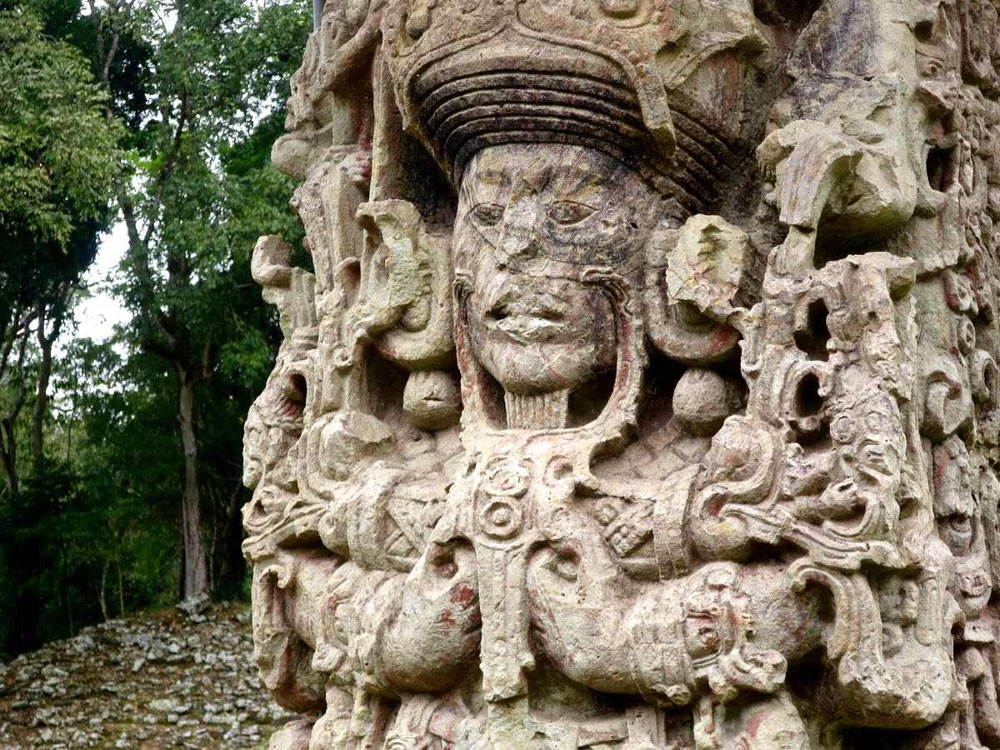
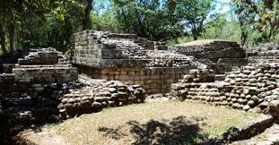
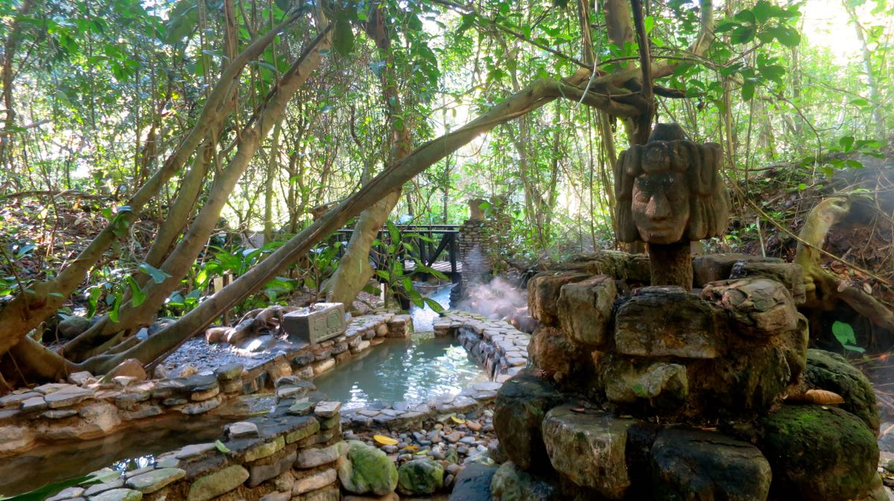

Copan has so many beautiful places to visit. The Maya Ruins allow you to explore
history. Just by exploring the town, you get samples of an amazing culture.
For relaxation, you can take a trip to the hot-springs and take in the jungle surrounding you.
Lastly, you could take your family or just yourself to the bird park filled with exotic birds or
go horse back riding.
Copan Information
Copan is a famous archaeological site of the Maya civilization.
The city developed an exclusive structural style within the tradition of the Maya's.
Copan also offers a beautiful bird park and natural hot springs.
Check out this link for more information about the Ruins: Copan Ruins

This is a famous and one of the most visited
sculptures in the Copan ruins. It was an important site and cultural center of the
Maya civilization. This should be a definite stop for your next vacation to enjoy this historical site.

This is a temple that has survived since the early 19th century.
Recent studies of skeletons suggest that the city was abandoned in 800 A.D.
The Maya Ruins of Copan are impressive sites to visit thanks
to its rich stone sculptures and intricate hieroglyphs.

These hot springs are man-made from cascading pools and waterfalls. They are
located on the hillside in the middle of a jungle and connected by stone foot pathways.
These pools are fed by 90 degree celsius hot water that comes from a volcanic spring.
These pools are the hot spot of relaxation in Copan.
Things to do:
visit the bird park
explore the town
take a soothing and adventurous trip to the hot springs
go horseback riding
become an archeologists for the day and visit the ruins
Visitor Reviews
A couple visited Copan and said, "We enjoy the natural beauty of this place. It is truly an amazing spot."
Stephanie Crocus said, "I spent a week in Copan and was the best week
of my life. I visited the Maya ruins and it took my breath away."
"I highly recommend visiting Copan because the culture and nature is truly breathtaking."
-Jack Stern